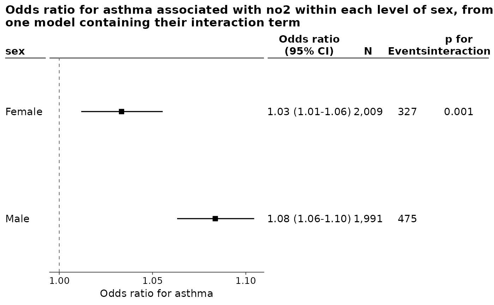

Draws the figure, having first made sure the plot in it has room for its
axis. A column of text is as wide as what it holds, and the plot is given
what those columns leave, which is a decision that cannot be made while the
figure is being built: how much they leave depends on the width the figure is
drawn at. So a table wide enough – a survival model reporting N, events and
person-time beside the estimates – can leave the plot a centimetre and the
numbers under its axis printed one on top of another. The floor is applied
here, where the width being drawn at is known: see the min_plot_width
argument of foresty_layout().
Arguments
- x
A figure returned by
foresty_main(),foresty_interaction()orforesty_combine().- ...
Passed on to patchwork's and ggplot2's own print methods.
- recording
Whether to record the drawing on the display list, as in
grid::grid.draw().
Examples
fit <- glm(asthma ~ no2 + sex, family = binomial, data = foresty_cohort)
print(foresty_interaction(fit, "no2", "sex", table = TRUE))
